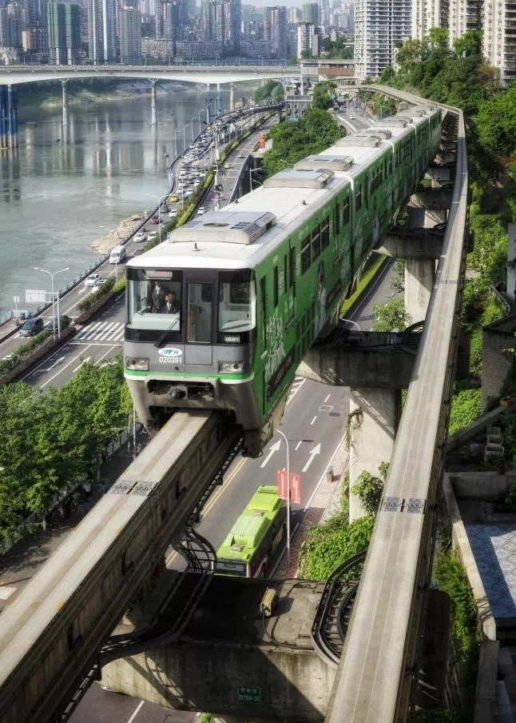
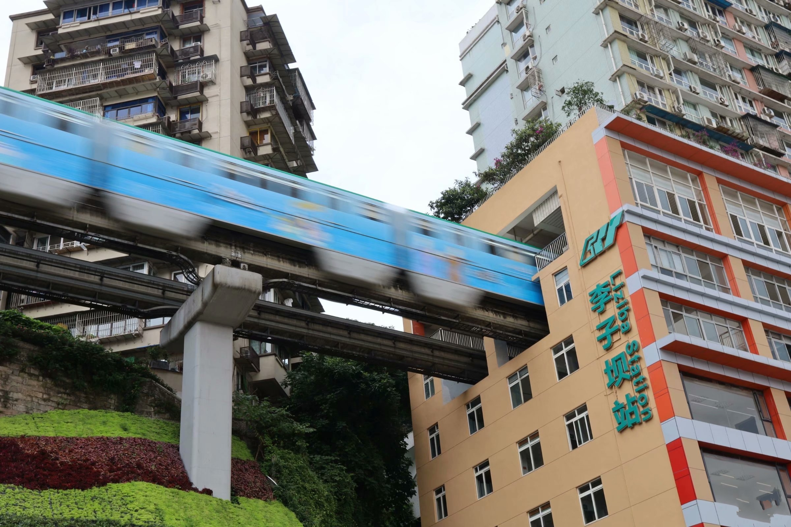
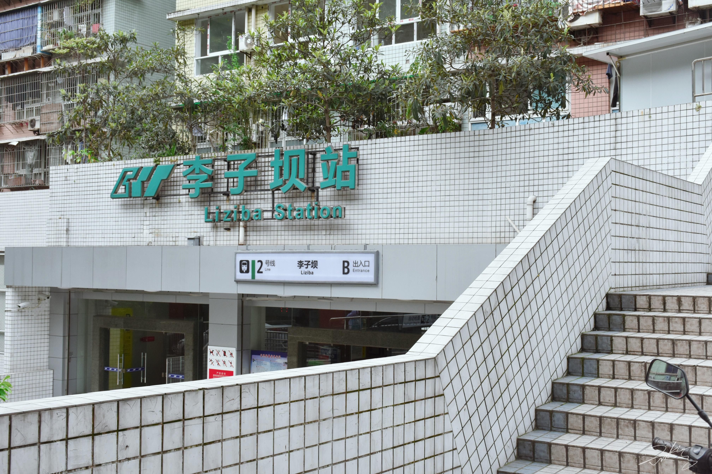

Highlights of Liziba Station:
- Train Running Through a Building: The most captivating feature of Liziba Station is the light rail train passing through the middle of a high-rise building, as if the train is "flying" into the structure. This space-saving design has become a unique urban spectacle.
- Viewing Platform: To allow visitors to fully appreciate this marvel, the Chongqing government has built a viewing platform near the station. Tourists can take photos and experience the thrill of the train passing through the building up close.
- Convenient Transportation: Liziba Station is a key stop on Chongqing Rail Transit Line 2, making it easily accessible by light rail. From here, visitors can also travel to other popular attractions in Chongqing, such as Jiefangbei and Hongya Cave.
- Harmony of City and Nature: The area around Liziba Station boasts a beautiful blend of modern urban landscapes and Chongqing's distinctive mountainous terrain. Visitors can experience the city's unique three-dimensional transportation system and its integration with natural surroundings.
Tips for Visiting:
- Best Time to Visit: Daytime is recommended for optimal lighting and photo opportunities.
- How to Get There: Take Chongqing Rail Transit Line 2 and alight at Liziba Station.
- Nearby Attractions: After visiting Liziba Station, you can explore nearby attractions such as Eling Er Factory Cultural Park and the Yangtze River Cableway to further experience the charm of Chongqing.
Liziba Station is not only a reflection of Chongqing's transportation development but also a perfect example of the harmonious integration of modern urban design and natural landscapes. For international visitors, it is a must-visit destination that offers a deep appreciation of Chongqing's "8D magical city" vibe.